Vendita diretta frutta e verdura
Vignola (MO) · Basse di Vignola
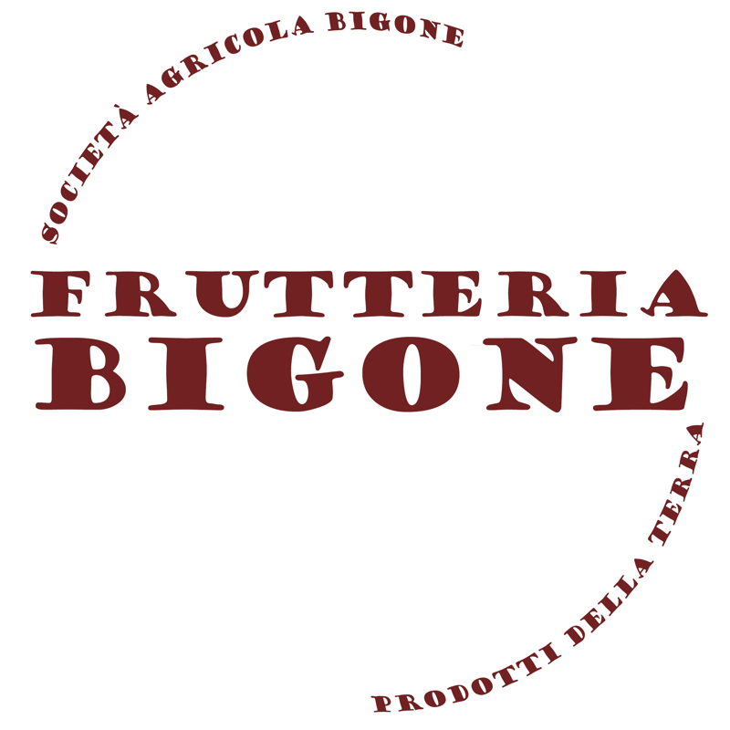

Vendita diretta frutta e verdura
Vignola (MO) · Basse di Vignola
Siamo un'azienda agricola a conduzione familiare, contadini da diverse generazioni. Produciamo piccoli e grandi frutti, coltiviamo un piccolo orto per la vendita diretta utilizzando la lotta integrata perché crediamo che l'agricoltura debba essere il più possibile sostenibile, ma anche sopperire alle necessità di tutti.
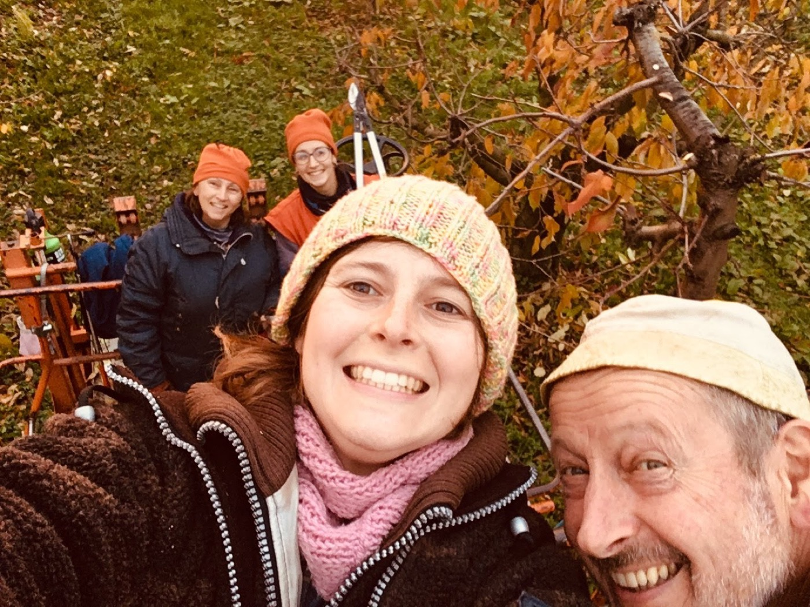
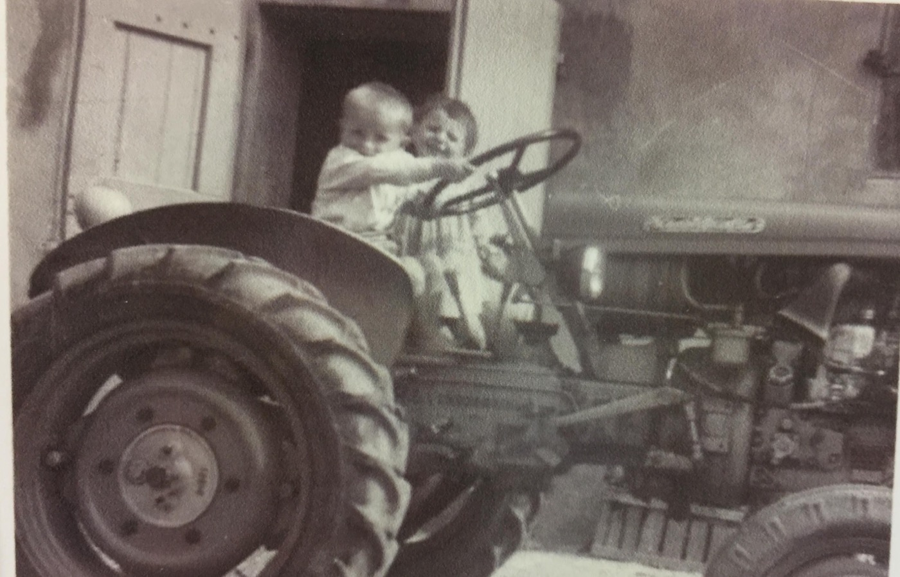
Siamo agricoltori da generazioni, la famiglia di nostro nonno Franco già possedeva un piccolo fondo. Per lavorare tutti avevano affittato parte della terra, fino a che nostro nonno insieme ai nostri genitori hanno acquistato nel 1989 la casa con la terra che a tutt'ora coltiviamo. Abbiamo poi aggiunto diversi altri poderi presi in affitto tutti in zona Basse di Vignola. Dal 2013 abbiamo fondato la Società Agricola Bigone, nella quale siamo entrate ognuna alla fine del proprio percorso universitario.
La nostra azienda aderisce al protocollo di lotta integrata avanzata, il che significa che utilizziamo i prodotti chimici ma solo quando c'è la necessità dettata da una avversità già riscontrata sul campo (quindi non utilizziamo fitofarmaci a priori).
Siamo sempre stati soci della Cooperativa Agrintesa, ma da quest'anno abbiamo deciso di avviare un piccolo punto vendita diretto dei nostri prodotti.
Lia e Rossella
ContattaciEcco come è composta la nostra azienda
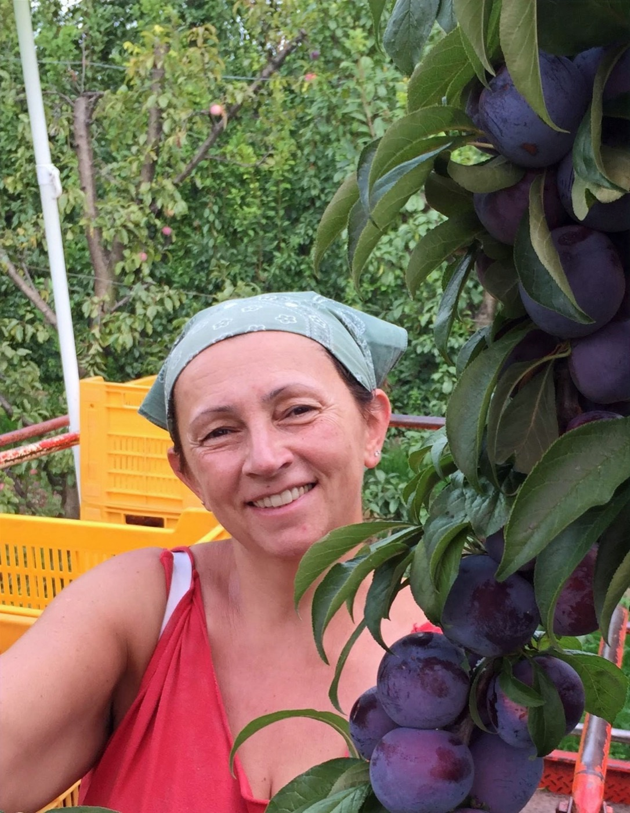
Il Capo
Il Tuttofare

Il legale rappresentante
Pubbliche Relazioni
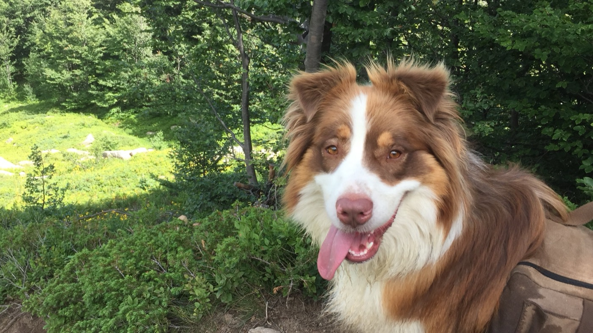
Il cane aziendale

Le ultime arrivate
I veri protagonisti del nostro lavoro · : in cima i frutti di stagione
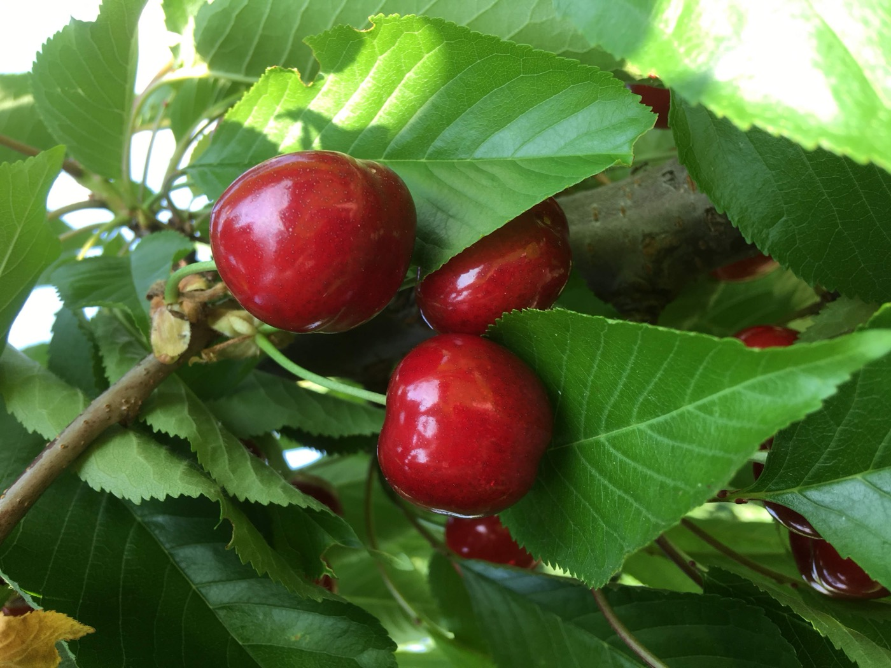
Dalle varietà più precoci come Early Lory e Bigarreaux, passando per le nuove varietà della famiglia Sweet fino ad arrivare ai più famosi Lapins e Ferrovia, finiamo in bellezza con Sweetheart e Staccato.
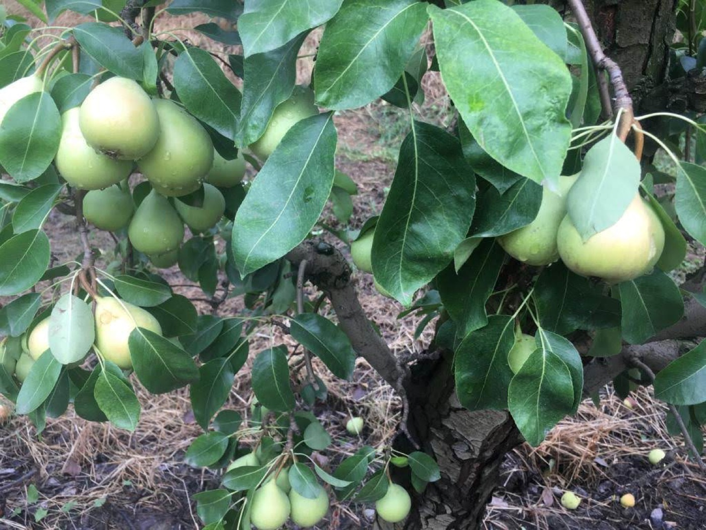
Le prime pere che raccogliamo, più piccole ma prelibate, fresche e dissetanti: sono Coscia, Santa Maria, Spadoncino.
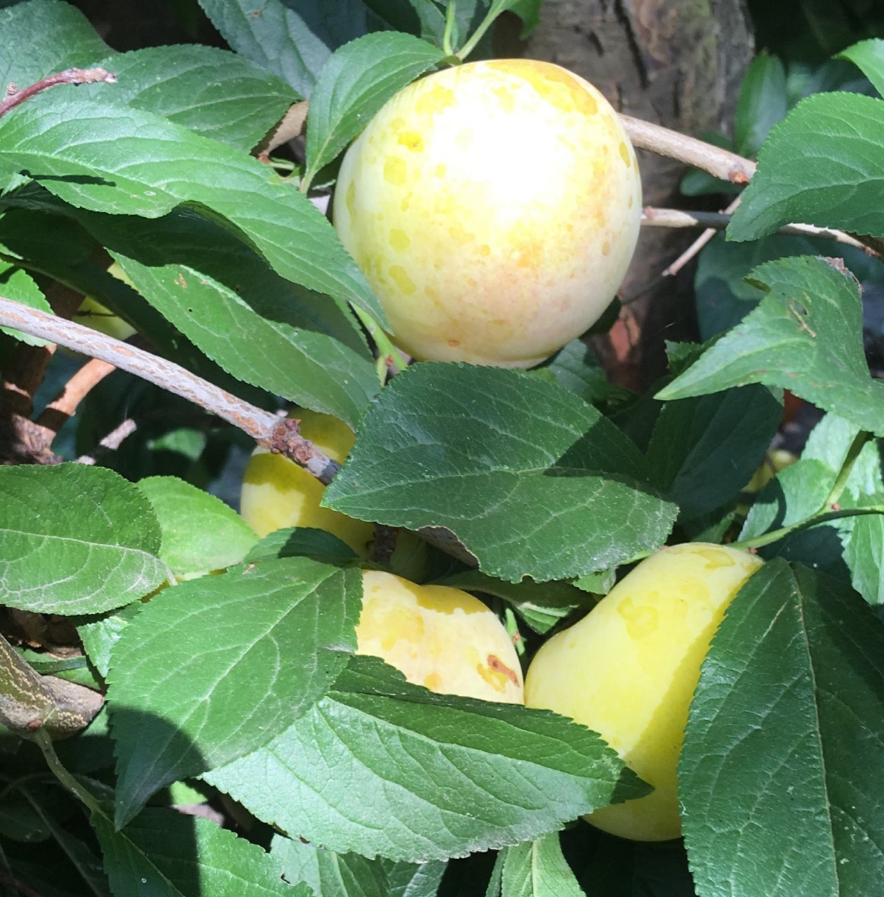
La migliore arma contro la calura estiva: le susine, dolci e dissetanti!
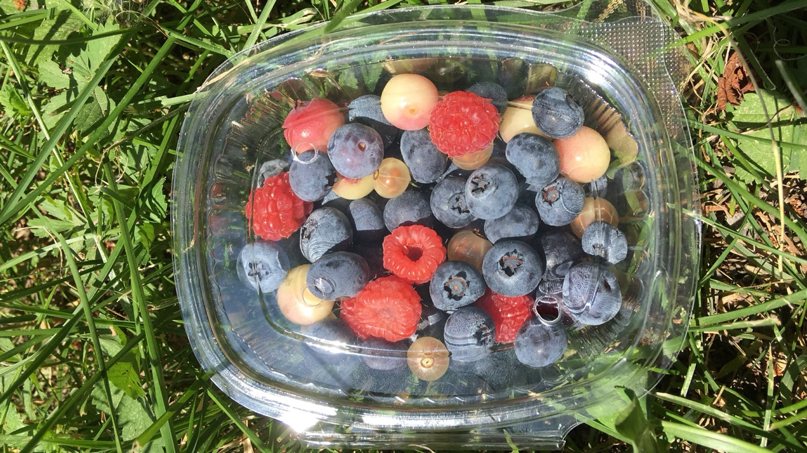
I più piccoli, ma anche i più importanti per l'alimentazione, oggi li chiamano super food: mirtilli americani, mirtilli rosa, ribes, lamponi, more.
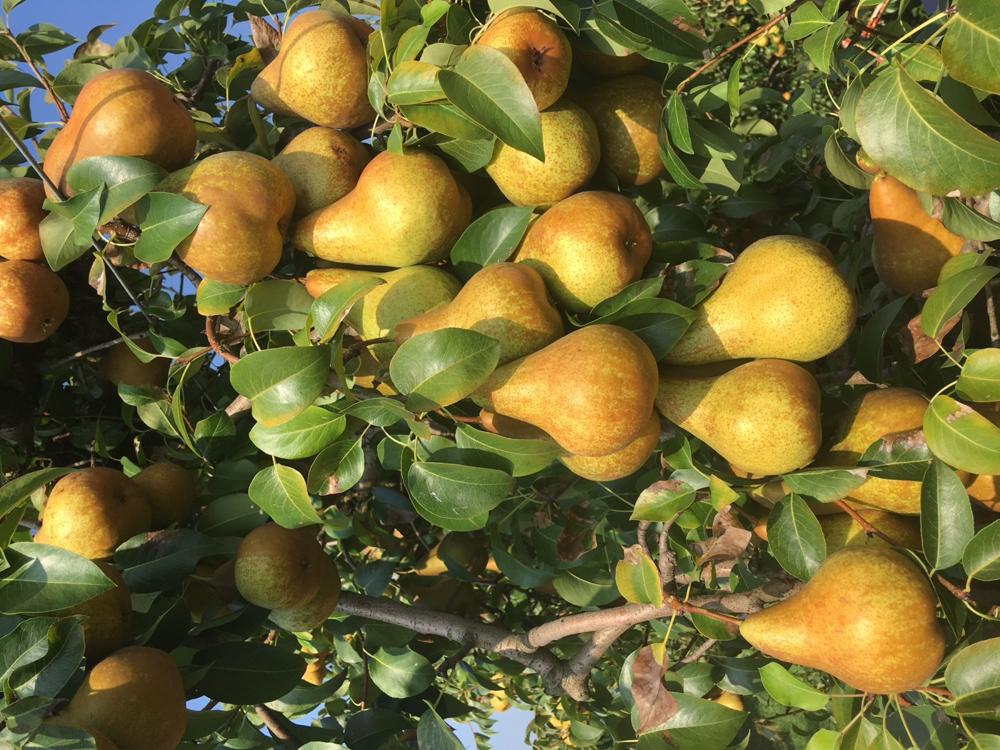
Queste sono le ultime pere che raccogliamo, che si riescono a conservare a lungo se tenute in frigo. Sono le pere più dolci: William, Abate Fetel, Conference, Kaiser Alexander.
Loti di Romagna e Rojo Brillante, i kaki tradizionali che si mangiano con il cucchiaino (da assaggiare accompagnati agli amaretti)!! Solo su prenotazione!
Le mele sono un frutto estivo e invernale, ricche di fibre e vitamina C.
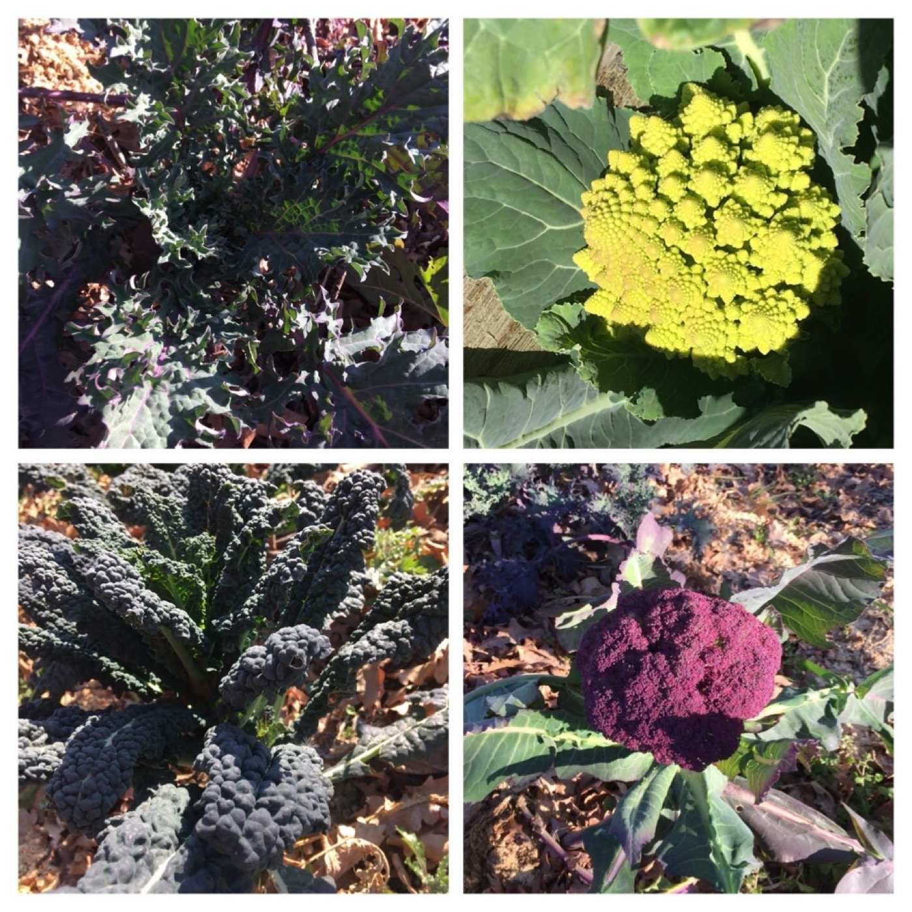
Abbiamo sempre avuto un piccolo orto per il nostro fabbisogno familiare, da quest'anno vorremmo portare anche sulle vostre tavole le nostre verdure preferite!!
Novità, cataloghi e racconti dal campo
4° camminata enogastronomica tra i ciliegi in fiore – domenica 12 aprile.
La passeggiata per ammirare la fioritura dei ciliegi e nel contempo assaggiare prodotti tipici del territorio si svolgerà anche quest'anno, in alcune aziende delle Basse di Vignola, con alcune novità. Da quest'anno si aggiunge la collaborazione di Slow Food, che ha un presidio dedicato alla tutela della Moretta di Vignola, e del Gruppo di documentazione vignolese "Mezaluna".
Maggiori informazioni: visitvignola.it
Iscrizioni: 351 7008797 · prolocovignola@gmail.com
Ecco a voi il nuovo catalogo aggiornato con i prodotti disponibili quest'anno! Seguiteci sui social per avere un'idea visiva di come sono!
| Bustine di semi | € 2,00 |
| Sacchettini lavanda | € 2,00 |
| Mele Inored | € 2,00/kg |
| Bustine aromi (rosmarino, erba Luigia, salvia, melissa, origano, peperoncini) | € 2,00 |
| Mele Inored essiccate | € 5,00 |
| Composte 212 ml (burro di mele e ciliegia dolce) | € 5,00 |
| Succo di mela 720 ml | € 5,00 |
| Kit mela brulè (1 succo, 1 busta di aromi e istruzioni) | € 7,00 |
| Sacchettino aromi per mela brulè | € 2,00 |
| Tisana semplice | € 6,00 |
| Infuso alla frutta (rosa canina, mela, mandarino, karkadè*) | € 6,00 |
| Tisana floreale (tiglio, foglie di mora, erba Luigia, mela) | € 6,00 |
| Sale alla mela | € 4,00 |
| Aglione (rosmarino, aglio, sale*) | € 4,00 |
| Sacchettino legnetti da decorare | € 3,00 |
| Decorazione natalizia | € 3,00 |
| Il miele di Fabio e Mattia* (km 0, via Doccia, Vignola) | € 8,00 |
*prodotti non di nostra produzione
Confezionamento: scatolina regalo + € 1,00 · cesta piccola + € 2,00 · cesta grande + € 4,00. Tutti i prodotti si possono combinare per realizzare confezioni regalo su misura! Per qualsiasi domanda o curiosità, siamo a disposizione.
| Bustine di semi (calendula, girasole, tagete nano) | € 1,00 |
| Lavanda sacchettino | € 2,00 |
| Bustine aromi (rosmarino, erba Luigia, salvia, melissa, origano, peperoncini) | € 2,00 |
| Buste essiccati (mele, mele alla cannella, tarassaco, alloro) | € 3,00 |
| Spugna di luffa | € 2,00 |
| Sapone scrub luffa (glicerina alla lavanda con luffa all'interno) | € 5,00 |
| Composte 212 ml (burro di mele e ciliegia dolce) | € 5,00 |
| Nettare di mela 720 ml | € 5,00 |
| Kit mela brulè (1 succo, 1 busta di aromi e istruzioni) | € 7,00 |
| Zucca spaghetti e violine | € 4,00 |
| Mele Inored e Fuji | € 1,00/kg |
| Infuso alla frutta "Mangia e bevi" | € 8,00 |
| Tisane (floreale, "Di gamb ed sresa") | € 6,00 |
| Sali aromatizzati | € 3,50 |
| Scatolina con tre sali | € 10,00 |
| Il miele di Fabio e Mattia (km 0, via Doccia, Vignola) | € 8,00 |
Confezionamento: scatolina regalo + € 1,00 · bauletto chiuso + € 2,00 · cesta grande + € 6,00. Tutti i prodotti si possono combinare per realizzare confezioni regalo su misura!
Il Natale è già alle porte, e qui in Frutteria abbiamo aggiunto un po' di novità rispetto ai prodotti dello scorso anno.
Rimangono come lo scorso anno i prodotti essiccati, le luffe, il miele, mele e zucche, le bustine di semi di fiori, la lavanda. Vi presenteremo i nuovi prodotti in modo più approfondito sui social, restate aggiornati!
Abbiamo iniziato la nuova stagione di raccolta della frutta, il nostro punto vendita self-service è di nuovo aperto e ci siamo già lanciati a capofitto nelle nostre piante di ciliegie... ma quest'anno abbiamo pensato per voi a una novità! Per farvi gustare ciliegie freschissime e alcuni dei nostri prodotti lavorati, vi accogliamo tra le piante di ciliegio nel fresco della sera (speriamo) per un aperitivo insieme!
Speriamo di cuore vi possa piacere la nostra iniziativa!
Scegliete voi come comporre le vostre ceste!
| Bustina di semi di fiori | € 1,00 |
| Peperoncini essiccati, 12 g | € 2,00 |
| Sacchettino lavanda essiccata per cassetti | € 2,00 |
| Spugna ecologica di luffa | € 3,00 |
| Zucca spaghetti piccola (con ricetta, per circa 2 persone) | € 3,00 |
| Zucca spaghetti grande (con ricetta, per circa 4 persone) | € 4,00 |
| Succo di ciliegia 200 ml | € 3,00 |
| Composta 314 ml (pere William, susine Black Splendor, ciliegie "la Brusca") | € 5,00 |
| Tris di composte | € 15,00 |
| Zucca a fiasco – capanna per il presepe | € 15,00 |
| Lampada zucca a fiasco (prenotazione 5 giorni prima) | € 30,00 |
| Il miele di Fabio e Mattia, km 0, 350 g (via Doccia, Vignola) | € 7,00 |
| Birra agricola NonSoloSpina km 0, 500 ml (Etherea-ALE, Impavida-IPA) | € 7,00 |
Confezionamento: prodotto singolo con segnalibro all'uncinetto € 2,00 · cesta piccola € 5,00 (cestino in legno, candela alla ciliegia, segnalibro, pigne, biglietto d'auguri fatto a mano e allestimento) · cesta grande € 6,00 (cesto in legno, candela alla ciliegia, segnalibro, decorazioni natalizie all'uncinetto, pigne, biglietto d'auguri fatto a mano e allestimento).
Esempi: composta con segnalibro € 7 · cesta piccola con 1 succo, 1 composta, peperoncino, spugna, zucca piccola € 21 · cesta grande con 1 succo, 2 composte, 1 birra, bustina di semi, 1 miele, lavanda, zucca grande € 40.
Per qualunque dubbio contattateci e saremo felici di potervi aiutare.
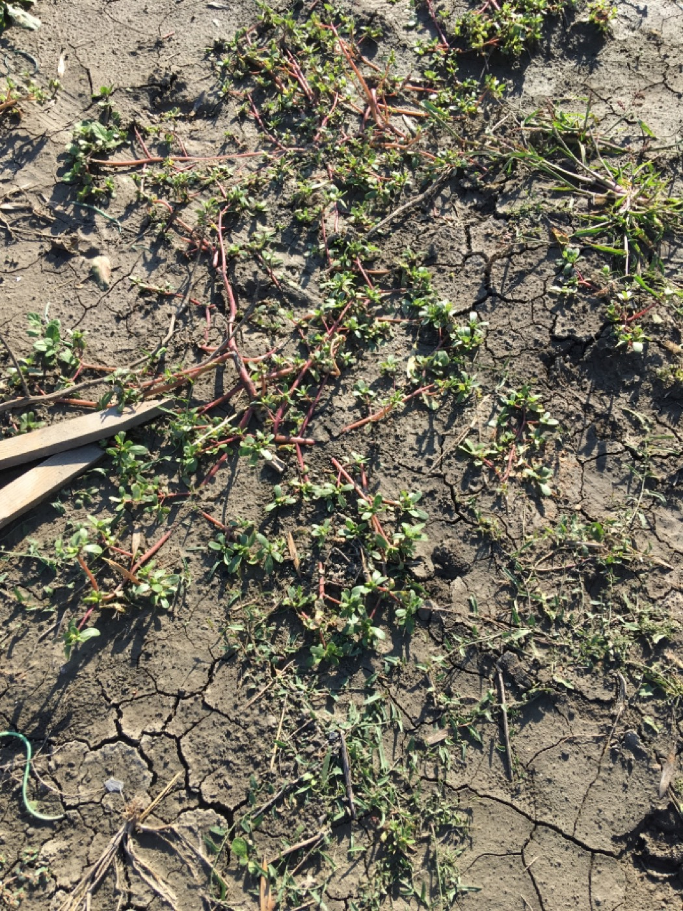
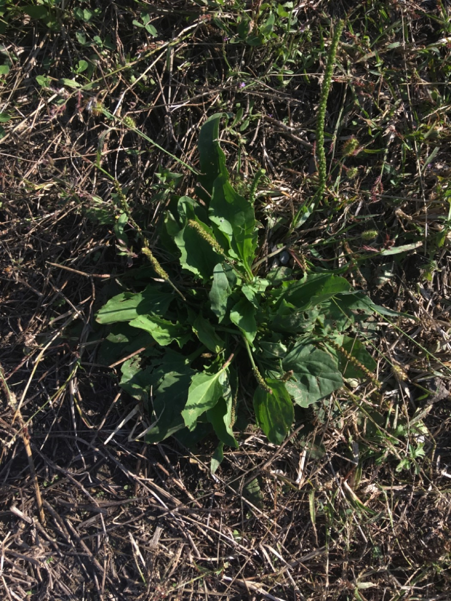
Vi è mai capitato di notare signore di una certa età ai bordi delle strade di campagna con delle sporte in mano, chinate a raccogliere erbe? A me hanno sempre incuriosito moltissimo, e guardandole pensavo a tutta la campagna che ho a disposizione piena di piante ed erbe spontanee che per noi sono infestanti e che invece potrebbero essere cibo!
Questa curiosità mi ha portato a leggere libri per imparare a usare quello che la natura ci offre in modo gratuito, ma ho riscontrato delle difficoltà: oltre alle più conosciute come il tarassaco e le ortiche, come potevo riconoscere con certezza le erbe da un libro? Poi in un corso sulle piante aromatiche ho conosciuto una docente davvero speciale: Beatrice Calia, l'Erbana, una vera esperta di piante selvatiche. Passeggiando con lei abbiamo potuto imparare a riconoscere diverse piante interessanti e soprattutto ottime ricette per gustarle al meglio.
La prima che ho ritrovato, che in estate è molto presente in tutto il nostro cortile, è la portulaca: una succulenta dalle foglie tenerissime, ama il caldo e sopravvive nelle zone di passaggio, è ottima cruda in insalata con pomodori, cetrioli e magari condita con lo yogurt! In mezzo ai filari vedo spesso la malva, dai riconoscibili fiori violacei; il tarassaco (o dente di leone, da noi "piscialetto"), le cui foglie giovani sono davvero ottime saltate in padella, con aglio e olio. Sul finire dell'estate in mezzo alle grandi piante di pere abate abbiamo tantissima piantaggine, ottima cotta da mangiare accompagnata alle lenticchie!
Tanti sono anche i fiori che si possono mangiare: dalle violette alle primule, passando per calendula, topinambur e acacia... per non parlare del fiore più amato dai bambini: la camomilla!! Ho ancora tante ricette da sperimentare e tante nuove selvatiche da scoprire e da riportare in campo (per quest'anno mi accontento di seminare camomilla e borragine).
Poche e semplici regole se pensate di cogliere piante dei campi:
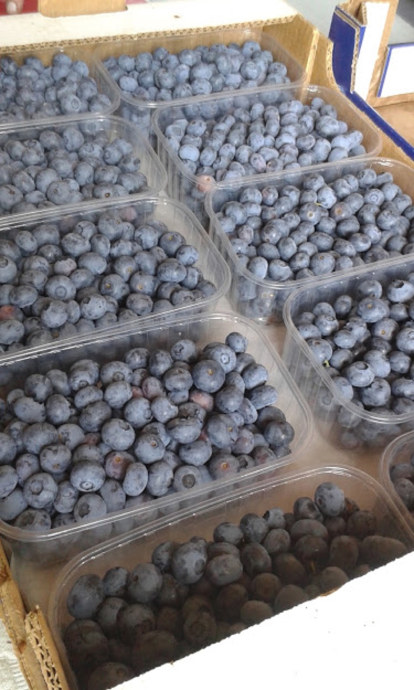
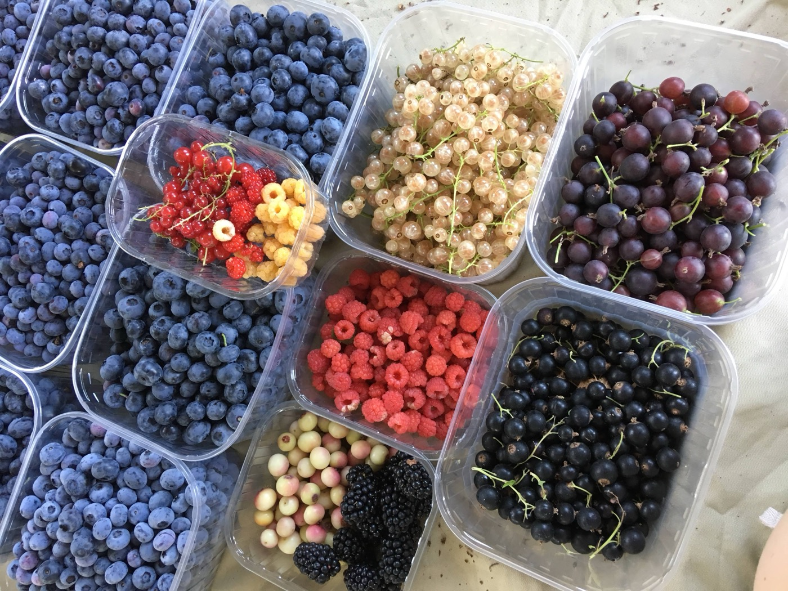
La nostra passione per i piccoli frutti è nata con i mirtilli giganti americani: nel 2015 ci è capitata l'occasione di andare in Valtellina a vedere un mirtilleto. Robert è andato e ci ha portato a casa 15 piante di mirtilli già grandi. Sono stati un esperimento: non conoscevamo nessuno che li avesse nelle nostre zone e non sapevamo che problemi avremmo incontrato.
Come coltivare i piccoli frutti. Il primo ostacolo era l'acidità del terreno: alla pianta di mirtillo serve un terreno acido e sciolto mentre il nostro è basico e argilloso, quindi abbiamo tenuto i mirtilli in grandi vasi dotati di un impianto d'irrigazione. Tenere le piante in vaso comporta diverse problematiche, ma le abbiamo gestite bene ed ora abbiamo esteso la nostra produzione con grande successo.
Visto il nostro interesse nascente ci siamo cimentati nella produzione di lamponi, grazie a uno zio che ne aveva in eccesso, perché è una pianta infestante quindi dopo poco tende a fare un grosso cespuglio scomodo da raccogliere. Rossella ha fatto un corso sui piccoli frutti, così abbiamo capito come fare l'impianto e speriamo di vederne presto i frutti. Da allora abbiamo iniziato a cercare altri piccoli frutti altrettanto interessanti:
Quest'anno ne abbiamo comprati dei nuovi, ma solo il tempo dirà se sono buoni e se si riescono a coltivare qui da noi: il mojo berry (frutto dell'anno 2017, molto simile al gelso), il sambuco (per fare il famosissimo Hugo), il lampone Black Jewel di colore nero che dovrebbe essere il più dolce e infine l'antica uva spina.
Questi piccoli frutti hanno grandi proprietà: chi è ricco di vitamina C (come il ribes nero, usato anche in erboristeria), chi di antiossidanti (come i mirtilli), antinfiammatori, sono ottimi per le diete ipocaloriche e come snack spezzafame. Sono fantastici nelle macedonie, nei dolci e anche per fare le marmellate. Non vediamo l'ora di condividerli con voi.
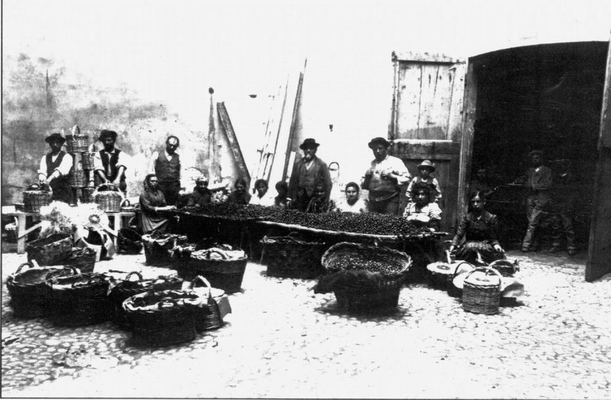
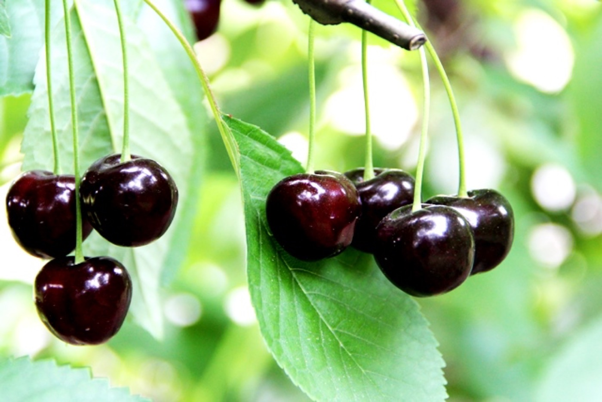
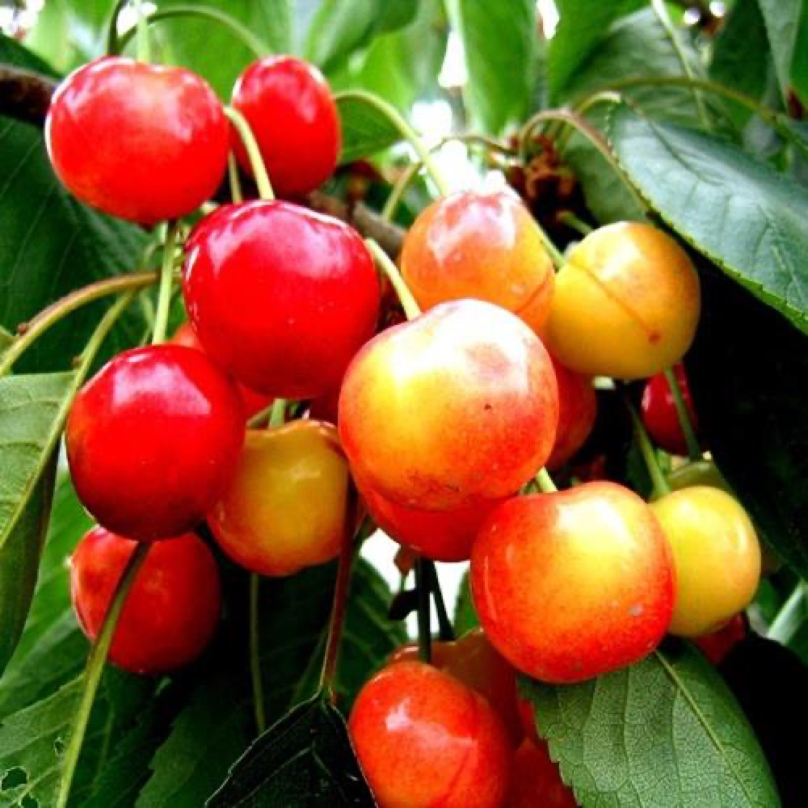
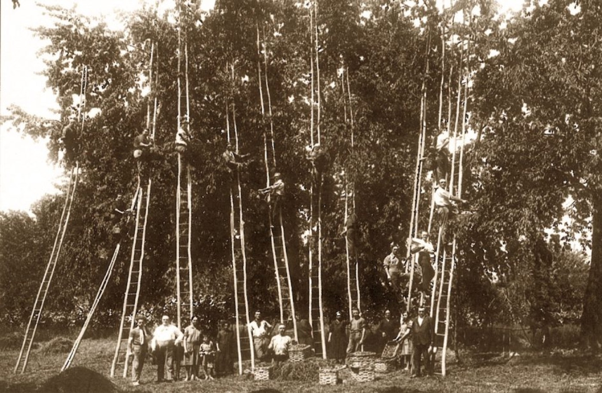

Ogni volta che porto delle ciliegie a qualcuno questo mi chiede: "Ma sono ciliegie o duroni?"... Domanda difficile! Diciamo che è come se qualcuno chiedesse se Nebbia è un pastore o un cane, uno non esclude l'altro.
Un vignolese quando si parla di ciliegie subito pensa alla perfetta ed inimitabile Moretta di Vignola, per noi motivo di grande orgoglio. Subito pensiamo a quelle vecchie foto di piante di dieci metri, con lunghe scale e banconi colmi di ciliegie "da far su" (cernire).
Nella nostra zona fino a 50 anni fa si producevano Morette, che hanno lo svantaggio di essere tenere quindi molto delicate e inadatte al trasporto, ma estremamente dolci e quindi molto usate nell'industria. Le altre varietà coltivate erano duroni come il nero primo, anellone, nero secondo, con la caratteristica di essere più sodi: furono loro, con l'apertura delle dogane, a essere esportati e a rendere Vignola famosa per le sue ciliegie. Altra varietà antica è il durone della Marca (o marchigiano): quelle dolci ciliegie bianche o con la facciata rosa poco conosciute in Italia ma amate dagli americani, ottime fresche e famose per la conservazione sotto spirito.
Da qua in avanti sono nate tantissime nuove varietà, dalle primizie che partono a metà maggio alle più tardive che arrivano a fine giugno; ultime arrivate ma già IGP sono la famiglia Sweet inventate dall'Università di Bologna.
Le ciliegie sono tutti quei frutti rossi, neri o bianchi con il picciolo e un unico nocciolo al centro; possono essere divise in duroni o tenerine a seconda di quanto sono sode, infine declinate nelle infinite varietà. Menzione a parte per la famiglia delle ciliegie acide, che sono proprio una specie diversa, come amarene, visciole e marasche. Esempi: la Moretta di Vignola è una ciliegia tenerina; il Marchigiano e la Celeste sono ciliegie duroni.
Mentre sto scrivendo questo breve articolo è metà febbraio e mi è venuta una voglia incredibile del "temp ed goier", cioè il tempo della raccolta delle ciliegie, quindi di frutta fresca raccolta e mangiata.
Via Brodano 16
Vignola (MO) 41058
✉ bobobigone@gmail.com
Rossella: +39 334 846 0161
Lia: +39 333 540 9824